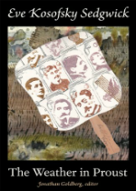

‘The Weather in Proust’ By Eve Kosofsky Sedgwick
Posted on 15. Apr, 2012 by Chase Dimock in Nonfiction, Reviews
With his seminal novel, In Search of Lost Time, Marcel Proust created modern literature’s most famous and poignant symbol of remembrance: the madeleine, a cookie whose taste and texture suddenly unlocked long-forgotten memories of his childhood and granted him the inspiration to write his epic coming of age story in turn-of-the-century France. The Weather in Proust (Duke University Press) is the late Eve Kosofsky Sedgwick’s madeleine—a remembrance of queer theories past. The deeper I delved into the book, the more I became reacquainted with Sedgwick’s indispensable contributions to queer studies and was reminded of what a loss the discipline had suffered with her passing in 2009.
The Weather in Proust is a collection of nine essays, five of which were intended to become part of a book on Proust and an additional four that encompass Sedgwick’s three decades of queer scholarship. The book is a meeting of the old and the new, both a retrospective on this founding mother of queer theory and a glimpse into what occupied her mind in the final years of her life. In Proust, Sedgwick finds a kindred spirit. Both writers are notorious for their excruciatingly detailed and nuanced literary dissections of the hidden crevasses of human desire and esoteric references to spirituality, philosophy, and classics. Yet, for those who may be turned off by the prospect of daunting literary analysis, only the first chapter of the book is dedicated to closely reading Proust. Instead of deconstructing Proust, Sedgwick calls upon his queer-inflected vision of mysticism and sensuality as a muse to guide her through her own meditations on subjects ranging from Buddhism, to Melanie Klein’s psychoanalytic theories on affect, to textile weaving.
As in the case of Proust, who grew up a sickly child and died at a young age, Sedgwick’s final two decades of writing were infused with a consciousness of her own mortality. Shortly after publishing her foundational book on queer theory, Epistemology of the Closet, Sedgwick was diagnosed with cancer. As she writes in the essay “Making Things, Practicing Emptiness”:
In 1996, it seemed unlikely I would even be alive into the new century; and the imperative to try and wrap my mind around the reality of death, what it might mean both in itself and for how I’d live whatever long or short time remained of my life became very material and pressing.
For a woman of words who had revolutionized the way we conceptualize the body and desire by exploring its discursive construction in literature and language, the pressing matter of mortality presented a challenge to find new ways to articulate her physical experience, which she supplemented with an interest in textile weaving and meditations on “intimacy with nonbeing” through Buddhist practices.
The book includes several photographs of her tapestries, in which she literally rendered spirituality and philosophy into tangible material by weaving together images of the Buddha with quotes from Proust’s novels. Sedgwick’s turn toward spiritual practice and textile weaving can ultimately be taken as an allegory for studying the humanities. When she remarks on how “fabric, thread, and other supplies press back so palpably, against [her] efforts to shape them according to the models [she] conceived,” she effectively translates, into the words of a craftsman, Axiom 1 from Epistemology of the Closet (“people are different from each other”), and that when they are forced into restrictive models and labels for their sexuality, queers will press back and create “nonce taxonomies” that destabilize and regroup sexual identity.
After translating her philosophy into a spiritual and artisanal practice, the final four essays of the book provide some of the most concise summaries of Sedgwick’s contributions to queer thought. For those just getting started in queer scholarship, these essays are an excellent introduction to the main arguments from her most famous books. For seasoned scholars who have not read Sedgwick in a while, they are a vivid reminder of how her pioneering philosophies of sexuality seem even more valid and perceptive today than when she first wrote them in the 80s and early 90s at a time of crisis in the LGBT community. Given recent pop-culture interest in “bromances” and the queer underpinnings of heterosexual male bonding, it is easy to forget that it was Sedgwick who first coined the concept of “homosocial” relationships in Between Men and predicted our anxiety over drawing the line between the platonic and the erotic in male relationships. Sedgwick also revisits her famous axioms from Epistemology of the Closet and reviews her list of the many categories and considerations that people assemble into a sexual identity. At a time when LGBT organizations are promoting a more assimilationist, carefully polished image for gays and lesbians, Sedgwick’s work provides a crucial reminder of the vast and intricate ways that people have historically constructed and expressed their sexuality that cannot be fully subsumed by identity politics.
On mourning his grandmother’s passing, Proust wrote that he had been “grieved by her death only when spontaneous memories had made her seem to [him] to be once alive again.” This perfectly describes the melancholic experience of reading a posthumous book by a great author. The vitality of her new words and ideas reanimate her presence in your psyche as a living, breathing entity, yet upon finishing the book and remembering they had been her last words, you are reminded of her absence in the world. Great authors live as long as their ideas remain relevant to the present world, and given the current political and cultural landscape, Sedgwick’s philosophies make her as alive as she has ever been.
The Weather in Proust
By Eve Kosofsky Sedgwick
Duke University Press
Paperback,9780822351580, 222pp.
December 2011
2 0
Trackbacks/Pingbacks
[...] Article Available at Lambda Literary) Like this:LikeBe the first to like [...]
[...] review here on Lambda Literary, I considered the late Eve Kosofsky Sedgwick’s posthumous book The Weather in Proust and mourned the loss of one of our greatest queer scholars. In hindsight, I wish I had come across [...]